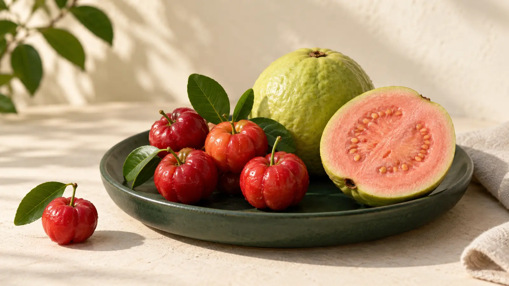
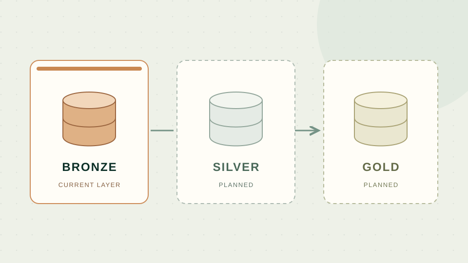
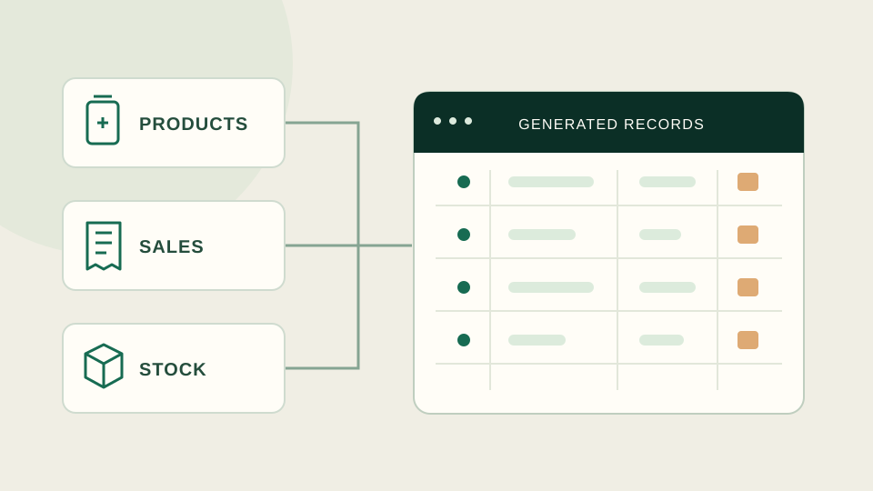
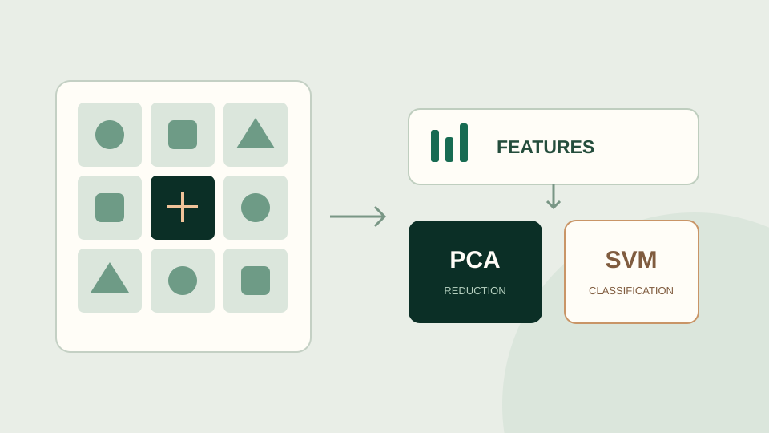

SQL ومستودعات البيانات
T-SQL، وربط الجداول، وCTEs، والدوال النافذية، والإجراءات المخزنة، وETL، وبنية Medallion، والنمذجة البعدية.
متاح لفرص تحليل البيانات وذكاء الأعمال
أجمع خبرة تزيد على 10 سنوات في صيدليات التجزئة مع SQL وPython وPower BI وTableau لتحويل البيانات التشغيلية المعقدة إلى معلومات تدعم قرارات الأعمال.
أعمل في صيدليات الدواء منذ 2015، وتشمل خبرتي خدمة العملاء والمبيعات وإجراءات التأمين وعمليات الفروع. تساعدني هذه الخبرة على فهم الأرقام في سياق قرارات التجزئة والرعاية الصحية.
أطبّق هذا الفهم في مشروعات تحليلية عملية. يربط مشروع Power BI بين المبيعات والهامش وسلوك العملاء والمستهدفات ومخاطر المخزون. وأطوّر أيضًا مشروعات مستودعات بيانات باستخدام SQL وPython مع توضيح مراحل الإنجاز. هذه مشروعات تعلّم مستقلة ببيانات اصطناعية أو عامة.
T-SQL، وربط الجداول، وCTEs، والدوال النافذية، والإجراءات المخزنة، وETL، وبنية Medallion، والنمذجة البعدية.
Power BI، ومقاييس DAX وسياق الفلاتر، وPower Query، وتعريف مؤشرات الأداء، والتقارير التفاعلية، وTableau، وعرض النتائج بلغة الأعمال.
pandas وNumPy، وتنظيف البيانات، والتحليل الاستكشافي، والتصور البياني، وأتمتة التحليل.
تحليلات التجزئة، وعمليات الصيدليات، وإجراءات التأمين، والمبيعات وخدمة العملاء، ومؤشرات المخزون.
جرّب تقريرًا تفاعليًا، واقرأ منطق التحليل، وتعرّف إلى النتائج التي يدعمها كل مشروع وحدود تفسيرها.
مشروع تقارير تجارية من ست صفحات لموزّع أدوية سعودي افتراضي. يربط المبيعات والهامش بالعملاء ومستهدفات مندوبي المبيعات وقرارات المخزون.
مشروع بورتفوليو مستقل · بيانات تدريب اصطناعية · لا يتضمن بيانات جهة العمل أو المرضى
 استكشف التقرير التفاعلي ←
استكشف التقرير التفاعلي ←

أي فاكهة أعلى تركيزًا في فيتامين C؟ تحليل 7,793 غذاءً ضمن 25 فئة، يشمل تنظيف البيانات ومقارنة العناصر الغذائية والتصور البياني ونمذجة السعرات.
نُشر العمل الأصلي على DataCamp في ديسمبر 2023. يتضمن مراجعة قابلة لإعادة التشغيل مع توضيح افتراضات النماذج وحدود التقييم.
اقرأ التحليل الكامل والكود ←
أساس للتحليلات المؤسسية يدمج مصادر صيدلانية محاكاة عبر طبقات Bronze وSilver وGold.
مرحلة الإنجاز الحالية: تحميل 72 جدولًا في طبقة Bronze تضم 60.2 مليون صف. يسبق التحقق والمطابقة مرحلتي Silver وGold وتقارير ذكاء الأعمال.
استكشف مستودع التطوير ↗
بناء بيانات مصادر تحاكي سلسلة صيدليات كبيرة لتغذية مستودع البيانات واختباره عبر مجالات التشغيل المختلفة.
اطّلع على أعمال التطوير ↗
دفتر تعلّم آلي مبكر يستكشف خصائص الصور وخفض الأبعاد باستخدام PCA والتصنيف باستخدام SVM على مجموعة بيانات UBC Ovarian Cancer.
يجمع سجل تعلّمي على DataCamp بين Python وSQL والإحصاء وتعلّم الآلة، مع روابط التحقق من الإنجاز وتحليل تطبيقي للأغذية.
تم التحقق من النشاط في سبتمبر 2026. تتضمن سجلات التدريب نسخًا تاريخية لبعض المشروعات.
استكشف رحلة التعلّم والمشروعات والشهادات ↗صيدلي · عمليات صيدليات التجزئة
بكالوريوس العلوم الصيدلية · 2013
مستعد للتحدي القادم
متاح لفرص تحليل البيانات وذكاء الأعمال والتقارير وتحليلات التجزئة والرعاية الصحية.